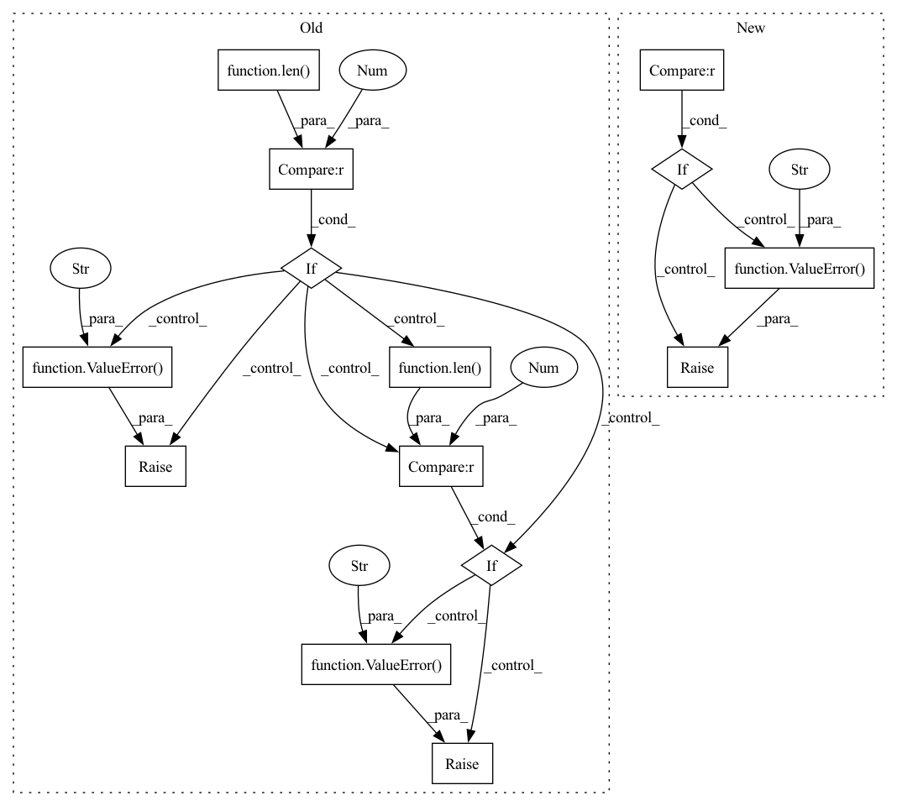

Pattern ID :32226

Before Change
raise ValueError(f"{metric_with_utils.log_name} must compute number value, "
f"not torch tensor with shape {metric_value.shape}.")
// If it numpy array with wrong shape.
if isinstance(metric_value, np.ndarray) and len(metric_value.shape) != 0:
raise ValueError(f"{metric_with_utils.log_name} must compute number value, "
f"not numpy array with shape {metric_value.shape}.")
// If it numpy array with one element but wrong dtype
if isinstance(metric_value, np.ndarray) and len(metric_value.shape) == 0 and\
np.issubdtype(metric_value.dtype, np.number):
raise ValueError(f"{metric_with_utils.log_name} must compute number value, "
f"not numpy array element with dtype {metric_value.dtype}.")
is_number = isinstance(metric_value, numbers.Number)
// If not numeric type.
if not (is_number or isinstance(metric_value, Tensor) or isinstance(metric_value, np.ndarray)):
raise ValueError(f"{metric_with_utils.log_name} must compute number value, "
f"not numpy array element with dtype {metric_value.dtype}.")
metric_key = f"{phase.value}/{metric_with_utils.log_name}"
log[metric_key] = metric_value
After Change
if self.is_number(metric_value_d):
metric_value[f"{phase.value}/{metric_with_utils.log_name}_{metric_name_d}"] = metric_value_d
// If there is no numeric value
if len(metric_value) == 0:
raise ValueError(f"Metric manager on_epoch_end method. Metric {metric_with_utils.log_name}"
f"return dict with has no numeric values.")
log.update(metric_value)
elif self.is_number(metric_value):
metric_key = f"{phase.value}/{metric_with_utils.log_name}"
log[metric_key] = metric_value
In pattern: SUPERPATTERN
Frequency: 3
Non-data size: 14
Instances
Fragment ID: 94311279
Project Name: eora-ai/torchok
Commit Name: c2fc24fbea4374c237f2164b01b38d617ba7b685
Time: 2022-09-01
Author: Sitcebelly
File Name: torchok/metrics/metrics_manager.py
M Class Name: MetricsManager
N Class Name: MetricsManager
M Method Name: on_epoch_end(2)
N Method Name: on_epoch_end(2)
M Parent Class: nn.Module
N Parent Class: nn.Module
M File Name: torchok/metrics/metrics_manager.py
N File Name: torchok/metrics/metrics_manager.py
M Start Line: 125
M End Line: 147
N Start Line: 132
N End Line: 151
'>
Before Change
ValueError: If phase not in self.phases.
ValueError: If metric.compute() return tensor with non zero shape.
if phase not in self.phases:
raise ValueError(f"Incorrect epoch setting. "
f"Please choose one of enum value {self.phases}")
log = {}
for metric_with_utils in self.__phase2metrics[phase]:
metric_value = metric_with_utils.compute()
After Change
raise ValueError(f"{metric_with_utils.log_name} must compute number value, "
f"not torch tensor with shape {metric_value.shape}.")
// If it numpy array with wrong shape.
if isinstance(metric_value, np.ndarray) and len(metric_value.shape) != 0:
raise ValueError(f"{metric_with_utils.log_name} must compute number value, "
f"not numpy array with shape {metric_value.shape}.")
// If it numpy array with one element but wrong dtype
if (isinstance(metric_value, np.ndarray) and len(metric_value.shape) == 0 and
np.issubdtype(metric_value.dtype, np.number)):
raise ValueError(f"{metric_with_utils.log_name} must compute number value, "
f"not numpy array element with dtype {metric_value.dtype}.")
is_number = isinstance(metric_value, numbers.Number)
// If not numeric type.
if not (is_number or isinstance(metric_value, Tensor) or isinstance(metric_value, np.ndarray)):
'>
Fragment ID: 94311285
Project Name: eora-ai/torchok
Commit Name: d8c48d17577a0f16e28022ba1ead8e9e07e7f62f
Time: 2022-05-05
Author: rashit.bayazitov.1995@gmail.com
File Name: src/metrics/metric_manager.py
M Class Name: MetricManager
N Class Name: MetricManager
M Method Name: on_epoch_end(2)
N Method Name: on_epoch_end(2)
M Parent Class: nn.Module
N Parent Class: nn.Module
M File Name: src/metrics/metric_manager.py
N File Name: src/metrics/metric_manager.py
M Start Line: 170
M End Line: 180
N Start Line: 165
N End Line: 187
'>
Before Change
if "metrics" not in self.test_cfg:
raise ValueError(
"`metrics` should be provided in `test_cfg` for evaluation.")
if gt is None:
raise ValueError(
"`gt` should be provided for evaluation; received `None`.")
results = dict(eval_result=self.evaluate(output=output, gt=gt, lq=lq))
// save image
if save_image:
After Change
raise ValueError(
"`self.test_cfg` should be provided; received `None`.")
if len(lq) != 1:
raise ValueError(
"Only one sample is allowed per batch to"
" (1) manage image unfolding (optional);"
" (2) evaluate image metrics;"
" (3) extract the image name for image saving (optional).")
// inference
if "unfolding" in self.test_cfg:
_cfg = self.test_cfg["unfolding"]
lq_pad, pad_info = pad_img(lq, _cfg["patchsize"])
lq_patches, unfold_shape = unfold_img(lq_pad, _cfg["patchsize"])
splits = _cfg["splits"]
npatches = lq_patches.shape[0]
if splits > npatches:
splits = npatches
b_split = npatches // splits
output_patches = []
for split in range(splits):
output_patches.append(
self.generator(lq_patches[split * b_split:(split + 1) *
b_split]))
if splits * b_split < npatches:
output_patches.append(
self.generator(lq_patches[splits * b_split:]))
output_patches = torch.cat(output_patches, dim=0)
output = combine_patches(output_patches, unfold_shape)
output = crop_img(output, pad_info)
else:
output = self.generator(lq)
// save image
if save_image:
if len(meta) != 1:
raise ValueError("Only one sample is allowed per batch to"
" extract the image name for image saving.")
lq_path = meta[0]["lq_path"]
lq_name = osp.splitext(osp.basename(lq_path))[0]
if isinstance(iteration, numbers.Number): // val during training
'>
Fragment ID: 94311280
Project Name: ryanxingql/powerqe
Commit Name: c6a8cea1e5737b2c4940178a25bab17e765562d1
Time: 2023-04-27
Author: 34084019+ryanxingql@users.noreply.github.com
File Name: powerqe/models/restorers/basic_restorer.py
M Class Name: BasicRestorerQE
N Class Name: BasicRestorerQE
M Method Name: forward_test(7)
N Method Name: forward_test(7)
M Parent Class: BasicRestorer
N Parent Class: BasicRestorer
M File Name: powerqe/models/restorers/basic_restorer.py
N File Name: powerqe/models/restorers/basic_restorer.py
M Start Line: 201
M End Line: 267
N Start Line: 123
N End Line: 196